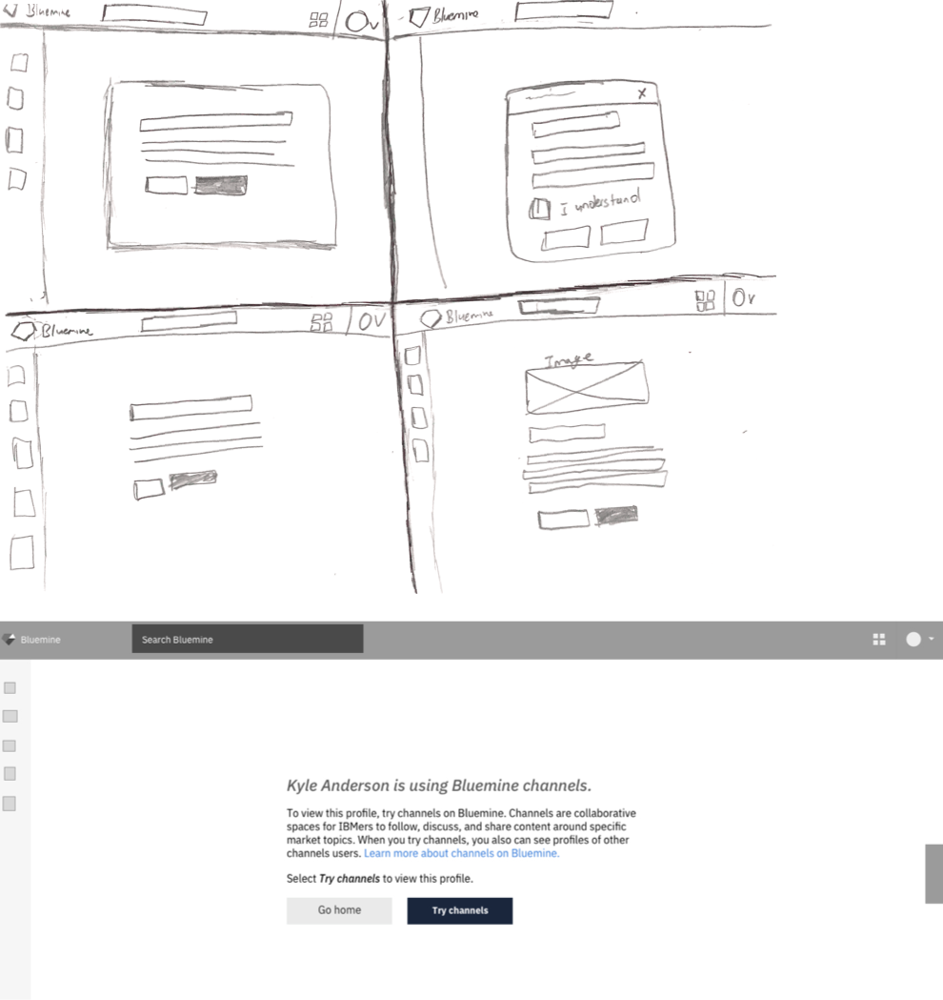

Learn how I created a design that redirected Bluemine users to a more desirable outcome.
Screenshot of error page mockup.
What is Bluemine Channels?
Bluemine is IBM’s trusted digital source for fact-based insights about clients, competitors, and markets. Channels are collaborative spaces on Bluemine for IBMers to follow, discuss, and share content around specific market topics.
Design need: Redesigned the 404 error page that non-beta users of Bluemine Channels would recieve when trying to access content.
Process: Using the internal brand styles I created an error message page that informs the users why they cannot procced to the content.
Impact: Help close the gap in Bluemine’s user experience.
How did I accomplished this project?
During one workweek in June of 2019, my manager assigned me the task of creating a design for a 404 error page for users that haven't signed up for channels. My manager wanted a quick turn around for this project.
Before designing anything, I like to understand what is the nature of the task. I broke the job into three parts and took steps into educating myself.
Part one - What is a 404 error page?
After doing some research, I learned that the purpose of the 404 error page indicates to the user that the server couldn't make the desired request. After gaining this insight, I deem displaying a page that said 404 error was too complicated for our user base.
Part two- Where will this page take users?
To understand where would my error page design take users, I had to guess who would interact with this page. After reviewing the ticket, I made a note to myself that non-Bluemine channels users would land on this page. After that, I began to think about the business goals of my manager and senior leadership to push Bluemine channels. I recommended to my manager that the page should give users the following option: opt into Bluemine channels, take them to the homepage and provide them with an opportunity to learn more.
Part three- What does the messaging of this page need to sound like?
Whenever I am working on a Bluemine solution, I always want to be aligned with the established writing style of the Bluemine product. I had a peer design look over my work to see if I matched the Bluemine brand.
low-fi sketches
